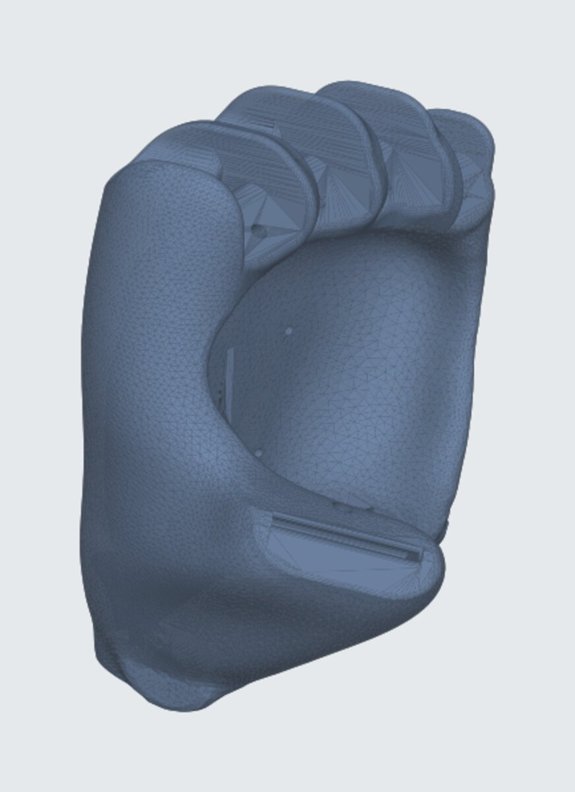

Embedded, Controls, Mechanical
SIGNET robotic arm
A 6-DOF arm that mirrors my arm and a vision model that reads ASL.
- When
- May 2026 to present
- Status
- In progress

A teleoperated 6-DOF arm that copies the motion of my own arm, paired with a vision model that recognizes American Sign Language gestures.
Under 50 ms control latency and 80% fewer telemetry faults.
Hardware and firmware
- ESP32 controllers with servo and BLDC drivers, IMUs and encoder feedback for multi-axis joint tracking.
- Distributed embedded C++ firmware across I2C and UART buses, with PID trajectory control.
- Hand, forearm and joints modeled in Onshape and 3D printed; boards in KiCad.
Vision
- Custom PyTorch and OpenCV models trained on more than 10,000 self-collected multimodal samples covering 26 ASL gestures.
- Real-time gesture recognition through a MediaPipe pipeline.
Still learning
Inverse kinematics for the joint targets, plus tighter motor control. A full build log is coming.